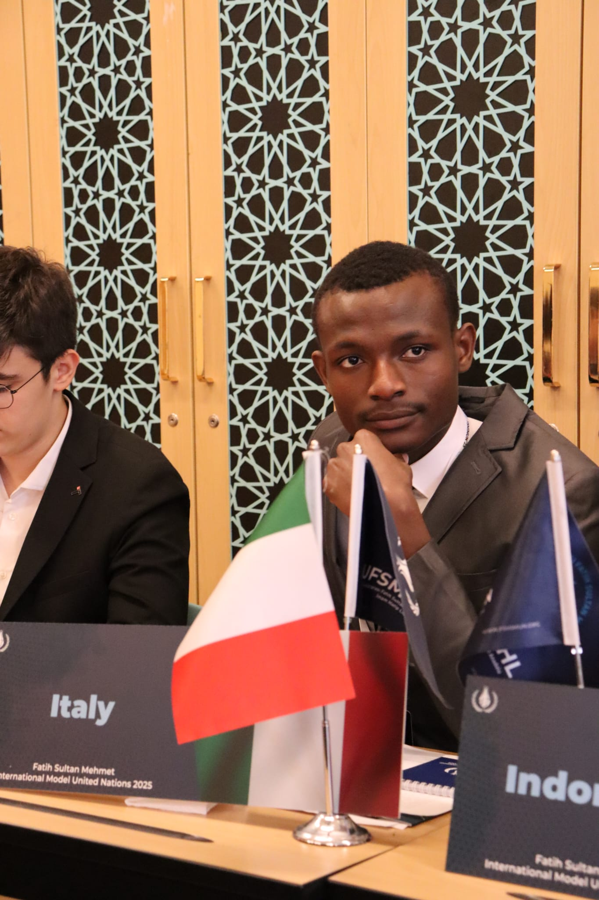

Adama Serrageh Bah
Secretary General (S.G) / Genel Sekreter
TR MOIC
TR MOIC organizasyonunda görev alan ekip üyeleri aşağıda yer almaktadır.

Secretary General (S.G) / Genel Sekreter

Director General (D.G) / Genel Direktör

Assistant S.G / Genel Sekreter Yardımcısı

Assistant D.G / Genel Direktör Yardımcısı

Head of PR / PR Başkanı

Head of Logistic / Lojistik Başkanı

Head of Academics - Arabic / Arapça Akademik Başkanı

Head of IT / IT Başkanı

Head of Admin / Admin Başkanı

Head of Finance / Finans Başkanı

Coordinator / Koordinatör

Coordinator / Koordinatör